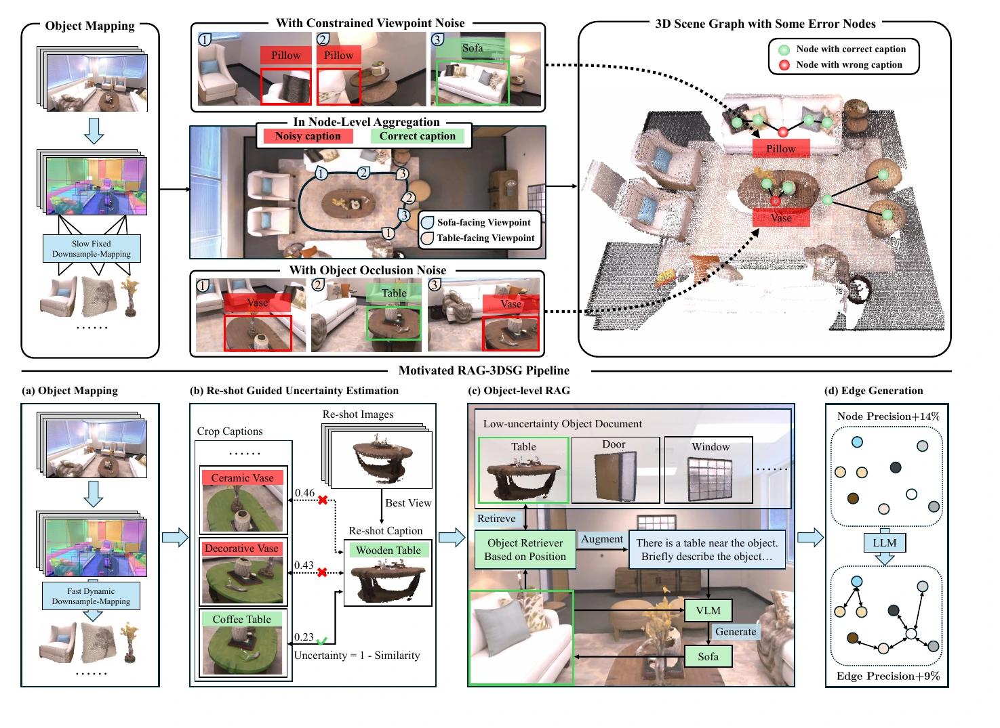
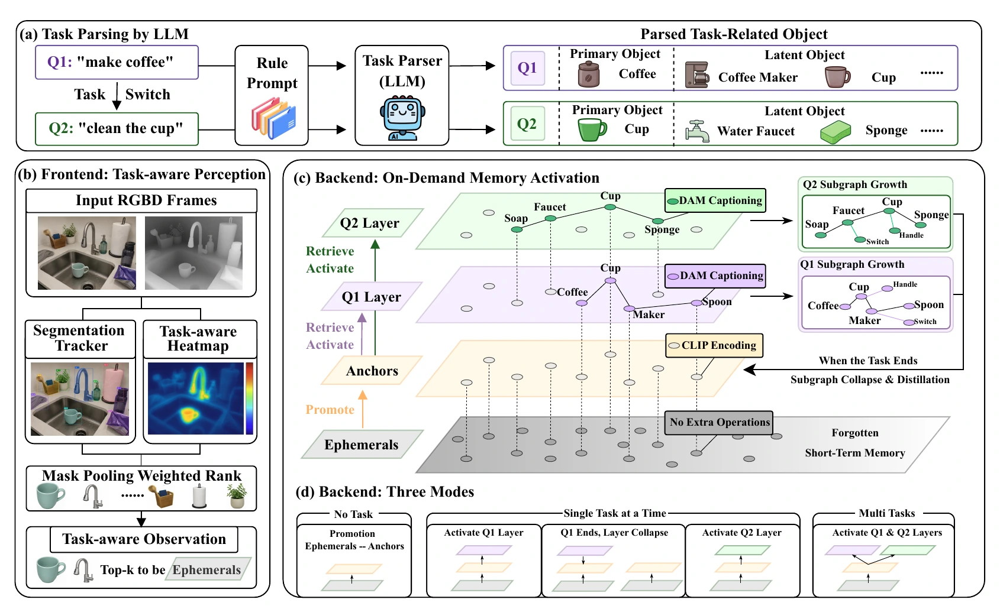

Embodied perception & manipulation
3D scene understanding, structured spatial representations, and perception-to-action grounding for robots operating in the physical world.
I'm Yifan Tian, an undergraduate researcher studying robotics and autonomous systems with AI. My work sits at the intersection of embodied perception, manipulation, and computer vision.
I am a 2025-cohort undergraduate at HKUST(GZ), studying Robotics and Autonomous Systems (ROAS) alongside Artificial Intelligence.
I care about the bridge between what an intelligent system perceives and what it can reliably do next. That means building representations of real environments, reasoning about uncertainty, and turning visual understanding into physical action.
Alongside research, I enjoy turning ambitious ideas into working systems—from robot policy training to multi-agent simulation tools.
My interests converge on machines that understand spatial environments and use that understanding to make safe, effective decisions.
3D scene understanding, structured spatial representations, and perception-to-action grounding for robots operating in the physical world.
Open-vocabulary recognition, multimodal visual reasoning, and robust representations that transfer beyond curated datasets.
Human-centered, evidence-aware AI systems that can support perception, analysis, and responsible clinical decision-making.
RESEARCH EXPERIENCE
Exploring reliable 3D scene understanding for embodied agents, with current work spanning uncertainty-aware scene graphs, retrieval-augmented semantics, and robot manipulation.
Early contributions to open, collaborative research in 3D perception and embodied intelligence.
Yue Chang, Rufeng Chen, Zhaofan Zhang, Yi Chen, Yifan Tian, Sihong Xie

Yue Chang, Rufeng Chen, Yifan Tian, Dazhi Huang, Zhaofan Zhang, Yi Chen, Wenze Zhang, Li Chen, Hui Xiong, Sihong Xie

Experiments in spatial intelligence, robot learning, and multi-agent systems—built to move ideas beyond the page.
A specialized agent exploring how structured 3D scene graphs can support grounded reasoning for embodied systems.
Data-driven action-policy training experiments for the Unitree G1 humanoid platform.
Exploration of a multi-agent simulation engine combining GraphRAG, role-based agents, and scenario forecasting.
A ROS 2 four-wheel mobile robot project integrating dual hoverboard motor controllers through ros2_control, with serial motor control and an IMU-ready localization path.
I'm interested in research-led ventures where technical depth can unlock practical, defensible products.
Perception and decision infrastructure for robots working in unstructured, high-value environments.
Systems that make complex visual evidence, simulation, and research workflows more legible and useful.
Assistive products that keep clinical context, safety, and human oversight at the center of deployment.
Writing in progress—on embodied perception, research practice, and building systems that leave the lab.
01
I'm open to research conversations, technical collaborations, and ambitious early-stage projects across embodied AI, computer vision, and healthcare.